上篇博客讲述了 postgresql 如何存储变长数据，它的应用主要是在 toast 。Toast 在存储大型数据时，会将它存储在单独的表中（称为 toast 表）。因为 postgresql 的 tuple（行数据）是存在在 Page 中的，Page 的大小默认为 8KB。postgresql 不允许 tuple 跨页存储，所以当一行数据的某个列数据过大时，比如 text 类型的数据，超过了单页的大小，那么 postgresql 会将它压缩，切分，并且存储在另外的位置。这种技术就是称为 Toast。
如果我们创建了一张表，有了变长数据的列，那么就会有一个对应的 toast 表，专门存储过大的数据。下面展示了一个例子
1
2
3
4
5
6
7
8
test =# \ d mytable
Table "public.mytable"
Column | Type | Collation | Nullable | Default
--------+---------+-----------+----------+---------
id | integer | | not null |
name | text | | |
Indexes :
"mytable_pkey" PRIMARY KEY , btree ( id )
可以看见 mytable 有个变长数据类型的列 name。然后我们来看看表对应的 oid。
1
2
3
4
5
test =# select oid from pg_class where relname = 'mytable' ;
oid
--------
127295
( 1 row )
可以看到 mytable 表的 oid 为 127295，那么可以推断出它的 toast 表名称为 pg_toast_127295，其对应的 oid 仍然可以通过上述语句查出来（在此省略了），或者
1
2
3
4
5
test =# select reltoastrelid from pg_class where relname = 'mytable' ;
reltoastrelid
---------------
127298
( 1 row )
我们继续来看看 pg_toast_127295 表有哪些列
1
2
3
4
5
6
7
8
9
10
11
12
13
test =# select attname , typname from pg_attribute inner join pg_type ON pg_type . oid = pg_attribute . atttypid where pg_attribute . attrelid = 127298 ;
attname | typname
------------+---------
chunk_data | bytea
chunk_seq | int4
chunk_id | oid
tableoid | oid
ctid | tid
xmin | xid
xmax | xid
cmin | cid
cmax | cid
( 9 rows )
除去下面的通用属性，它只定义了三列
列名
数据类型
注释
chunk_id
oid
数据的 id
chunk_seq
int4
序列 id，表示第几个切片
chunk_data
bytea
byte数组，表示存储的数据
graph TD
src_data[原始数据]
compute_heap_size{计算该行数据的大小<br>是否超过了阈值}
compress[压缩数据]
compute_compress_size{计算压缩后的数据大小<br>是否超过了阈值}
split[将数据按照指定大小切分]
save_external[存储到 toast 表, <br>每个切分对应toast表的一行数据]
save_here[存储在该表中]
src_data --> compute_heap_size
compute_heap_size --超过了--> compress
compute_heap_size --没有--> save_here
compress --> compute_compress_size
compute_compress_size --超过了--> split
compute_compress_size --没有--> save_here
split --> save_external
假设现在向 mytable 表插入一条大型数据，长度为3MB，里面存储了一张图片，采用了base64格式。
1
INSERT INTO mytable ( name ) values ( 'j7161gnb1u23 ...... 972bh6==' );
postgresql 在处理这条请求时，发现 name 是 text 类型，并且这次插入的数据过大。那么首先它会被压缩，假设被压缩成 1MB，压缩后仍然不满足大小，然后按照指定的大小（默认为 2048 byte）切分成 512 份。每一份切片对应 toast 表的一行数据，它们的 chunk_id 都是相同的，因为属于同一个数据，只是 chunk_seq 不同，对应着切片位置。chunk_data 列就是存储着切片的数据。
下面的图展示了普通表的 heap 数据和 toast 表的数据联系。

toast 表的数据格式在上面已经讲解过了，这里详细介绍了普通表的数据格式，它存储了 toast 表的对应数据位置。首先它是 varattrib_1b_e 数据类型，
1
2
3
4
5
6
typedef struct
{
uint8 va_header ;
uint8 va_tag ; /* 类型 */
char va_data [ FLEXIBLE_ARRAY_MEMBER ];
} varattrib_1b_e ;
它的 va_tag 类型为 VARTAG_ONDISK ，后面的 va_data数据格式如下：
1
2
3
4
5
6
7
typedef struct varatt_external
{
int32 va_rawsize ; /* Original data size (includes header) */
int32 va_extsize ; /* External saved size (doesn't) */
Oid va_valueid ; /* Unique ID of value within TOAST table */
Oid va_toastrelid ; /* RelID of TOAST table containing it */
} varatt_external ;
src/backend/access/common/toast_internals.c文件中的toast_save_datum函数实现了如何将数据存储到 toast 表，下面的程序经过简化处理了。
1
2
3
4
5
6
7
8
9
10
11
12
13
14
15
16
17
18
19
20
21
22
23
24
25
26
27
28
29
30
31
32
33
34
35
36
37
38
39
40
41
42
43
44
45
/*
rel: 普通表
value: 该列数据
oldexternal: 用于更新用的
*/
Datum toast_save_datum ( Relation rel , Datum value , struct varlena * oldexternal , int options ) {
struct varatt_external toast_pointer ;
Datum t_values [ 3 ];
t_values [ 0 ] = ObjectIdGetDatum ( toast_pointer . va_valueid );
t_values [ 2 ] = PointerGetDatum ( & chunk_data );
int32 chunk_seq = 0 ; // 切片索引
// 开始切分数据，data_todo 是剩余数据的长度
while ( data_todo > 0 )
{
int i ;
// 计算切片长度
chunk_size = Min ( TOAST_MAX_CHUNK_SIZE , data_todo );
// 记录 chunk_seq 列值
t_values [ 1 ] = Int32GetDatum ( chunk_seq ++ );
// 记录切片数据, data_p 记录了写入的数据位置
SET_VARSIZE ( & chunk_data , chunk_size + VARHDRSZ );
memcpy ( VARDATA ( & chunk_data ), data_p , chunk_size );
// 插入 toast 表
toasttup = heap_form_tuple ( toasttupDesc , t_values , t_isnull );
heap_insert ( toastrel , toasttup , mycid , options , NULL );
// toast 表设置了 chunk_id 和 chunk_seq 的符合唯一索引
for ( i = 0 ; i < num_indexes ; i ++ )
{
if ( toastidxs [ i ] -> rd_index -> indisready )
index_insert ( toastidxs [ i ], t_values , t_isnull ,
& ( toasttup -> t_self ),
toastrel ,
toastidxs [ i ] -> rd_index -> indisunique ?
UNIQUE_CHECK_YES : UNIQUE_CHECK_NO ,
NULL );
}
data_todo -= chunk_size ;
data_p += chunk_size ;
}
}
上面展示了 postgresql 对变长数据的默认切片策略，其实它还提供了别的策略。总共支持四种，如下所示：
PLAIN，数据不能被压缩，也不能存储到 toast 表EXTENDED，默认策略，可以被压缩，也可以存储到 toast 表EXTERNAL，不能被压缩，但可以存储到 toast 表MAIN，可以被压缩，也可以存储到 toast 表，只不过它的优先级比EXTENDED低
postgresql 并没有使用跨页存储的方案，而是将大型数据单独放到其余地方存储。这样在条件过滤时，会比较好，因为它不需要读取这些大的数据，而且只有当该列被选中时，才会在返回数据时去读取。这种场景下，减少了磁盘 IO 的读取，提升了性能。
同样它也有对应的缺点，那就是写入大型的数据时，会比较慢。因为它需要切片，然后插入到 toast 表中，还要更新 toast 表的索引。如果采用跨页存储，那么还可以利用磁盘顺序写的高性能。在读取整行数据时候，还需要先去寻找 toast 表的索引，然后再去读取 toast 表的数据，相比较跨页存储，仍然无法使用磁盘顺序读的高性能。